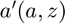
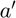
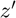

Derive Asset and Choices/Outcomes Distribution (Loop)
back to Fan's Dynamic Assets Repository Table of Content.
Contents
- FF_AZ_DS finds the stationary asset distributions
- Default
- Parse Parameters
- Start Profiler and Timer
- f(a,z): Initialize Output Matrixes
- f(a,z): Initialize Convergence Conditions
- f(a,z): Derive Stationary Distribution
- f(a,z): Iterate over Probability mass for Discrete Random Variable
- f(a,z): Check Tolerance and Continuation
- End Time and Profiler
- f(y), f(c), f(a): Generate Key Distributional Statistics for Each outcome
function [result_map] = ff_az_ds(varargin)
FF_AZ_DS finds the stationary asset distributions
Building on the Asset Dynamic Programming Problem ff_az_vf_vecsv, here we solve for the asset distribution. This version of the program uses loops.
This finds the asset distribution induced by the policy functions. Note that the asset distribution is a joint discrete random variable. We derive f(a,z), where f is the joint discrete random variables probability mass. Then we can derive f(a'(a,z)), f(c(a,z)) directly. The procedure here does not involve simulation. Simulation could also be used to derive these distributions, but given the discrete grid based solution algorithm, there is no need to introduce simulation and associated errors once we have fixed the shock process that generates randomness.
The code here works when we are looking for the distribution of f(a,z), where a'(a,z), meaning that the a next period is determined by a last period and some shock. Given this, the a' is fixed for all z'. If however, the outcome of interest is such that: y'(y,z,z'), meaning that y' is different depending on realized z', the code below does not work, rather, this code ff_iwkz_ds should be used.
The function here accomplishes two tasks: (1) deriving the asset distribution as a discrete random variable over the states (2) calculating various statistics based on the discrete joint random variable's probability mass function for various outcomes of the model
Distributions of Interest:


Statistics include:


- percentiles:
- fraction of outcome held by up to percentiles:
@param param_map container parameter container
@param support_map container support container
@param armt_map container container with states, choices and shocks grids that are inputs for grid based solution algorithm
@param func_map container container with function handles for consumption cash-on-hand etc.
@return result_map container contains policy function matrix, value function matrix, iteration results, and policy function, value function and iteration results tables.
new keys included in result_map in addition to the output from ff_az_vf_vecsv are various distribution statistics for each model outcome, keys include cl_mt_pol_a, cl_mt_pol_c, cl_mt_pol_coh, etc, these include:
- the first element of each of these cell array is y(a,z), the outcome/choice at the state space points
- the second element of the cell is another container, which contains statistics computed for f(y) based on y(a,z) and f(a,z), f(y) is the probability mass function for outcome y given the stationary distribution f(a,z). The second element container also includes f(y) itself as well as f(y,z).
- additionally, result_map also stores some of the statistics for different variables jointly together. (a) tb_outcomes_meansdperc: where each row is a different outcome of the model, and each table column stores a different statistics of interest. (b) tb_outcomes_fracheld: which measures the fraction of asset held by different people.
@example
% Get Default Parameters
it_param_set = 6;
[param_map, support_map] = ffs_az_set_default_param(it_param_set);
% Change Keys in param_map
param_map('it_a_n') = 500;
param_map('it_z_n') = 11;
param_map('fl_a_max') = 100;
param_map('fl_w') = 1.3;
% Change Keys support_map
support_map('bl_display') = false;
support_map('bl_post') = true;
support_map('bl_display_final') = false;
% Call Program with external parameters that override defaults
ff_az_ds(param_map, support_map);@include
@seealso
- derive distribution f(y'(y,z)) one asset loop: ff_az_ds
- derive distribution f(y'({x,y},z)) two assets loop: ff_akz_ds
- derive distribution f(y'({x,y},z, z')) two assets loop: ff_iwkz_ds
- derive distribution f(y'({y},z)) or f(y'({x,y},z)) vectorized: ff_az_ds_vec
- derive distribution f(y'({y},z, z')) or f(y'({x,y},z, z')) vectorized: ff_iwkz_ds_vec
- derive distribution f(y'({y},z)) or f(y'({x,y},z)) semi-analytical: ff_az_ds_vecsv
- derive distribution f(y'({y},z, z')) or f(y'({x,y},z, z')) semi-analytical: ff_iwkz_ds_vecsv
Default
Program can be externally invoked with az, abz or various other programs. By default, program invokes using az model programs:
- it_subset = 5 is basic invoke quick test
- it_subset = 6 is invoke full test
- it_subset = 7 is profiling invoke
- it_subset = 8 is matlab publish
- it_subset = 9 is invoke operational (only final stats) and coh graph
if (~isempty(varargin)) % if invoked from outside override fully [param_map, support_map, armt_map, func_map, result_map] = varargin{:}; else % default invoke close all; it_param_set = 8; bl_input_override = true; % 1. Generate Parameters [param_map, support_map] = ffs_az_set_default_param(it_param_set); % Note: param_map and support_map can be adjusted here or outside to override defaults % param_map('it_a_n') = 750; % param_map('it_z_n') = 15; % 2. Generate function and grids [armt_map, func_map] = ffs_az_get_funcgrid(param_map, support_map, bl_input_override); % 1 for override % 3. Solve value and policy function using az_vf_vecsv, if want to solve % other models, solve outside then provide result_map as input [result_map] = ff_az_vf_vecsv(param_map, support_map, armt_map, func_map); end
----------------------------------------
----------------------------------------
xxxxxxxxxxxxxxxxxxxxxxxxxxxxxxxxxxxxxxxx
xxxxxxxxxxxxxxxxxxxxxxxxxxxxxxxxxxxxxxxx
Begin: Show all key and value pairs from container
CONTAINER NAME: SUPPORT_MAP
----------------------------------------
Map with properties:
Count: 40
KeyType: char
ValueType: any
xxxxxxxxxxxxxxxxxxxxxxxxxxxxxxxxxxxxxxxx
xxxxxxxxxxxxxxxxxxxxxxxxxxxxxxxxxxxxxxxx
----------------------------------------
----------------------------------------
pos = 26 ; key = st_img_name_main ; val = ff_az_vf_vecsv_default
pos = 27 ; key = st_img_path ; val = C:/Users/fan/CodeDynaAsset//m_az//solve/img/
pos = 28 ; key = st_img_prefix ; val =
pos = 29 ; key = st_img_suffix ; val = _p8.png
pos = 30 ; key = st_mat_name_main ; val = ff_az_vf_vecsv_default
pos = 31 ; key = st_mat_path ; val = C:/Users/fan/CodeDynaAsset//m_az//solve/mat/
pos = 32 ; key = st_mat_prefix ; val =
pos = 33 ; key = st_mat_suffix ; val = _p8
pos = 34 ; key = st_mat_test_path ; val = C:/Users/fan/CodeDynaAsset//m_az//test/ff_az_ds_vecsv/mat/
pos = 35 ; key = st_matimg_path_root ; val = C:/Users/fan/CodeDynaAsset//m_az/
pos = 36 ; key = st_profile_name_main ; val = ff_az_vf_vecsv_default
pos = 37 ; key = st_profile_path ; val = C:/Users/fan/CodeDynaAsset//m_az//solve/profile/
pos = 38 ; key = st_profile_prefix ; val =
pos = 39 ; key = st_profile_suffix ; val = _p8
pos = 40 ; key = st_title_prefix ; val =
----------------------------------------
xxxxxxxxxxxxxxxxxxxxxxxxxxxxxxxxxxxxxxxx
Scalars in Container and Sizes and Basic Statistics
xxxxxxxxxxxxxxxxxxxxxxxxxxxxxxxxxxxxxxxx
i idx value
__ ___ _____
bl_display 1 1 0
bl_display_defparam 2 2 1
bl_display_dist 3 3 0
bl_display_final 4 4 0
bl_display_final_dist 5 5 1
bl_display_final_dist_detail 6 6 1
bl_display_funcgrids 7 7 0
bl_graph 8 8 1
bl_graph_coh_t_coh 9 9 1
bl_graph_funcgrids 10 10 0
bl_graph_onebyones 11 11 1
bl_graph_pol_lvl 12 12 0
bl_graph_pol_pct 13 13 0
bl_graph_val 14 14 0
bl_img_save 15 15 0
bl_mat 16 16 0
bl_post 17 17 1
bl_profile 18 18 0
bl_profile_dist 19 19 0
bl_time 20 20 0
it_display_every 21 21 20
it_display_final_colmax 22 22 12
it_display_final_rowmax 23 23 100
it_display_summmat_colmax 24 24 5
it_display_summmat_rowmax 25 25 5
----------------------------------------
----------------------------------------
xxxxxxxxxxxxxxxxxxxxxxxxxxxxxxxxxxxxxxxx
xxxxxxxxxxxxxxxxxxxxxxxxxxxxxxxxxxxxxxxx
Begin: Show all key and value pairs from container
CONTAINER NAME: ARMT_MAP
----------------------------------------
Map with properties:
Count: 4
KeyType: char
ValueType: any
xxxxxxxxxxxxxxxxxxxxxxxxxxxxxxxxxxxxxxxx
xxxxxxxxxxxxxxxxxxxxxxxxxxxxxxxxxxxxxxxx
----------------------------------------
----------------------------------------
----------------------------------------
xxxxxxxxxxxxxxxxxxxxxxxxxxxxxxxxxxxxxxxx
Matrix in Container and Sizes and Basic Statistics
xxxxxxxxxxxxxxxxxxxxxxxxxxxxxxxxxxxxxxxx
i idx rowN colN mean std min max
_ ___ ____ ____ ________ ________ _________ _______
ar_a 1 1 1 750 25 14.463 0 50
ar_stationary 2 2 1 15 0.066667 0.060897 0.0027089 0.16757
ar_z 3 3 1 15 1.1347 0.69878 0.34741 2.567
mt_z_trans 4 4 15 15 0.066667 0.095337 0 0.27902
----------------------------------------
----------------------------------------
xxxxxxxxxxxxxxxxxxxxxxxxxxxxxxxxxxxxxxxx
xxxxxxxxxxxxxxxxxxxxxxxxxxxxxxxxxxxxxxxx
Begin: Show all key and value pairs from container
CONTAINER NAME: PARAM_MAP
----------------------------------------
Map with properties:
Count: 24
KeyType: char
ValueType: any
xxxxxxxxxxxxxxxxxxxxxxxxxxxxxxxxxxxxxxxx
xxxxxxxxxxxxxxxxxxxxxxxxxxxxxxxxxxxxxxxx
----------------------------------------
----------------------------------------
pos = 23 ; key = st_analytical_stationary_type ; val = eigenvector
pos = 24 ; key = st_model ; val = az
----------------------------------------
xxxxxxxxxxxxxxxxxxxxxxxxxxxxxxxxxxxxxxxx
Scalars in Container and Sizes and Basic Statistics
xxxxxxxxxxxxxxxxxxxxxxxxxxxxxxxxxxxxxxxx
i idx value
__ ___ _____
bl_loglin 1 1 0
fl_a_max 2 2 50
fl_a_min 3 3 0
fl_b_bd 4 4 0
fl_beta 5 5 0.94
fl_crra 6 6 1.5
fl_loglin_threshold 7 7 1
fl_nan_replace 8 8 -9999
fl_r_save 9 9 0.025
fl_tol_dist 10 10 1e-05
fl_tol_pol 11 11 1e-05
fl_tol_val 12 12 1e-05
fl_w 13 13 1.28
fl_z_mu 14 14 0
fl_z_rho 15 15 0.8
fl_z_sig 16 16 0.2
it_a_n 17 17 750
it_maxiter_dist 18 18 1000
it_maxiter_val 19 19 1000
it_tol_pol_nochange 20 20 25
it_trans_power_dist 21 21 1000
it_z_n 22 22 15
----------------------------------------
----------------------------------------
xxxxxxxxxxxxxxxxxxxxxxxxxxxxxxxxxxxxxxxx
xxxxxxxxxxxxxxxxxxxxxxxxxxxxxxxxxxxxxxxx
Begin: Show all key and value pairs from container
CONTAINER NAME: FUNC_MAP
----------------------------------------
Map with properties:
Count: 6
KeyType: char
ValueType: any
xxxxxxxxxxxxxxxxxxxxxxxxxxxxxxxxxxxxxxxx
xxxxxxxxxxxxxxxxxxxxxxxxxxxxxxxxxxxxxxxx
----------------------------------------
----------------------------------------
pos = 1 ; key = f_coh ; val = @(z,b)(z*fl_w+b.*(1+fl_r_save))
pos = 2 ; key = f_cons ; val = @(z,b,bprime)(f_coh(z,b)-bprime)
pos = 3 ; key = f_inc ; val = @(z,b)(z*fl_w+b.*(fl_r_save))
pos = 4 ; key = f_util_crra ; val = @(c)(((c).^(1-fl_crra)-1)./(1-fl_crra))
pos = 5 ; key = f_util_log ; val = @(c)log(c)
pos = 6 ; key = f_util_standin ; val = @(z,b)f_util_log(f_coh(z,b))
----------------------------------------
xxxxxxxxxxxxxxxxxxxxxxxxxxxxxxxxxxxxxxxx
Scalars in Container and Sizes and Basic Statistics
xxxxxxxxxxxxxxxxxxxxxxxxxxxxxxxxxxxxxxxx
i idx xFunction
_ ___ _________
f_coh 1 1 1
f_cons 2 2 2
f_inc 3 3 3
f_util_crra 4 4 4
f_util_log 5 5 5
f_util_standin 6 6 6
----------------------------------------
----------------------------------------
xxxxxxxxxxxxxxxxxxxxxxxxxxxxxxxxxxxxxxxx
xxxxxxxxxxxxxxxxxxxxxxxxxxxxxxxxxxxxxxxx
Begin: Show all key and value pairs from container
CONTAINER NAME: RESULT_MAP
----------------------------------------
Map with properties:
Count: 10
KeyType: char
ValueType: any
xxxxxxxxxxxxxxxxxxxxxxxxxxxxxxxxxxxxxxxx
xxxxxxxxxxxxxxxxxxxxxxxxxxxxxxxxxxxxxxxx
----------------------------------------
----------------------------------------
pos = 2 ; key = ar_st_pol_names ; val = cl_mt_val cl_mt_pol_a cl_mt_coh cl_mt_pol_c
----------------------------------------
xxxxxxxxxxxxxxxxxxxxxxxxxxxxxxxxxxxxxxxx
Matrix in Container and Sizes and Basic Statistics
xxxxxxxxxxxxxxxxxxxxxxxxxxxxxxxxxxxxxxxx
i idx rowN colN mean std min max
_ ___ ____ ____ _______ _______ _______ ______
ar_pol_diff_norm 1 1 105 1 29.079 159.48 0 1532.9
ar_val_diff_norm 2 3 105 1 10.915 26.247 0.02899 163.75
cl_mt_coh 3 4 750 15 27.077 14.84 0.44468 54.536
cl_mt_pol_a 4 5 750 15 23.941 13.926 0 49.599
cl_mt_pol_c 5 6 750 15 3.136 0.93512 0.44468 4.9363
cl_mt_val 6 7 750 15 10.288 3.1692 -1.496 15.012
mt_pol_idx 7 8 750 15 359.64 208.62 1 744
mt_pol_perc_change 8 9 105 15 0.21725 0.34614 0 1
mt_val 9 10 750 15 10.288 3.1692 -1.496 15.012


Parse Parameters
% append function name st_func_name = 'ff_az_ds'; support_map('st_profile_name_main') = [st_func_name support_map('st_profile_name_main')]; support_map('st_mat_name_main') = [st_func_name support_map('st_mat_name_main')]; support_map('st_img_name_main') = [st_func_name support_map('st_img_name_main')]; % result_map % ar_st_pol_names is from section _Process Optimal Choices_ in the value % function code. params_group = values(result_map, {'cl_mt_pol_a'}); [cl_mt_pol_a] = params_group{:}; mt_pol_a = deal(cl_mt_pol_a{1}); % armt_map params_group = values(armt_map, {'ar_a', 'mt_z_trans'}); [ar_a, mt_z_trans] = params_group{:}; % param_map params_group = values(param_map, {'it_a_n', 'it_z_n'}); [it_a_n, it_z_n] = params_group{:}; params_group = values(param_map, {'it_maxiter_dist', 'fl_tol_dist'}); [it_maxiter_dist, fl_tol_dist] = params_group{:}; % support_map params_group = values(support_map, {'bl_profile_dist', 'st_profile_path', ... 'st_profile_prefix', 'st_profile_name_main', 'st_profile_suffix',... 'bl_time', 'bl_display_dist', 'it_display_every'}); [bl_profile_dist, st_profile_path, ... st_profile_prefix, st_profile_name_main, st_profile_suffix, ... bl_time, bl_display_dist, it_display_every] = params_group{:};
Start Profiler and Timer
% Start Profile if (bl_profile_dist) close all; profile off; profile on; end % Start Timer if (bl_time) tic; end
f(a,z): Initialize Output Matrixes
Initialize the distribution to be uniform
mt_dist_az_init = ones(length(ar_a),it_z_n)/length(ar_a)/it_z_n; mt_dist_az_cur = mt_dist_az_init; mt_dist_az_zeros = zeros(length(ar_a),it_z_n);
f(a,z): Initialize Convergence Conditions
bl_histiter_continue = true; it_iter = 0; ar_dist_diff_norm = zeros([it_maxiter_dist, 1]); mt_dist_perc_change = zeros([it_maxiter_dist, it_z_n]);
f(a,z): Derive Stationary Distribution
Iterate over the discrete joint random variable variables (a,z)
We are looking for the distribution of: where , meaning that the a next period is determined by a last period and some shock. Given this, the  is fixed for all 
To make the code work for life-cycle model: # mt_dist_az_init: Initialize with potentially exogenous initial asset distribution # mt_dist_az: change mt_dist_az to tensor with a third dimension for age # at the beginning of the third loop over ar_z, get mass at current age, meaning: fl_cur_za_prob = ts_dist_az(it_a_prime_idx, it_zp_q, age) # at the end of the third loop over ar_z, add accumulated mass to next period, meaning: ts_dist_az(it_a_prime_idx, it_zp_q, age+1) =+ fl_zfromza
while (bl_histiter_continue)
it_iter = it_iter + 1;
f(a,z): Iterate over Probability mass for Discrete Random Variable
compared to ff_az_vf, we basically have the same set of loops. There, there were four loops, here there are three loops. We eliminated the loop over next period choices, because here we already know optimal choices
% initialize empty mt_dist_az = mt_dist_az_zeros; % loop 1: over exogenous states for it_z_i = 1:it_z_n % loop 2: over endogenous states for it_a_j = 1:length(ar_a) % f(a'|a) = 1 for only one a' % in dynamic programming problem, had a loop over choices, now % already have optimal choices, do not need to loop fl_aprime = mt_pol_a(it_a_j, it_z_i); it_a_prime_idx = find(ar_a == fl_aprime); % loop 3: loop over future shocks % E_{a,z}(f(a',z'|a,z)*f(a,z)) for it_zp_q = 1:it_z_n % current probablity at (a,z) fl_cur_za_prob = mt_dist_az_cur(it_a_j, it_z_i); % f(z'|z) transition fl_ztoz_trans = mt_z_trans(it_z_i, it_zp_q); % f(a',z'|a,z)*f(a,z) fl_zfromza = fl_cur_za_prob*fl_ztoz_trans; % cumulating mt_dist_az(it_a_prime_idx, it_zp_q) = mt_dist_az(it_a_prime_idx, it_zp_q) + fl_zfromza; end end end
f(a,z): Check Tolerance and Continuation
% Difference across iterations ar_dist_diff_norm(it_iter) = norm(mt_dist_az - mt_dist_az_cur); mt_dist_perc_change(it_iter, :) = sum((mt_dist_az ~= mt_dist_az))/(it_a_n); % Update mt_dist_az_cur = mt_dist_az; % Print Iteration Results if (bl_display_dist && (rem(it_iter, it_display_every)==0)) fprintf('Dist it_iter:%d, fl_dist_diff:%d\n', it_iter, ar_dist_diff_norm(it_iter)); tb_hist_iter = array2table([sum(mt_dist_az_cur,1); std(mt_dist_az_cur,1); ... mt_dist_az_cur(1,:); mt_dist_az_cur(it_a_n,:)]); tb_hist_iter.Properties.VariableNames = strcat('z', string((1:size(mt_dist_az,2)))); tb_hist_iter.Properties.RowNames = {'mdist','sddist', 'Ldist', 'Hdist'}; disp('mdist = sum(mt_dist_az_cur,1) = sum_{a}(p(a)|z)') disp('sddist = std(mt_pol_a_cur,1) = std_{a}(p(a)|z)') disp('Ldist = mt_dist_az_cur(1,:) = p(min(a)|z)') disp('Hdist = mt_dist_az_cur(it_a_n,:) = p(max(a)|z)') disp(tb_hist_iter); end % Continuation Conditions: if (it_iter == (it_maxiter_dist + 1)) bl_histiter_continue = false; elseif ((it_iter == it_maxiter_dist) || ... (ar_dist_diff_norm(it_iter) < fl_tol_dist)) it_iter_last = it_iter; it_iter = it_maxiter_dist; end
end
End Time and Profiler
% End Timer if (bl_time) toc; end % End Profile if (bl_profile_dist) profile off profile viewer st_file_name = [st_profile_prefix st_profile_name_main st_profile_suffix]; profsave(profile('info'), strcat(st_profile_path, st_file_name)); end
f(y), f(c), f(a): Generate Key Distributional Statistics for Each outcome
Having derived f(a,z) the probability mass function of the joint discrete random variables, we now obtain distributional statistics. Note that we know f(a,z), and we also know relevant policy functions a'(a,z), c(a,z), or other policy functions. We can simulate any choices that are a function of the random variables (a,z), using f(a,z). We call function ff_az_ds_post_stats which uses fft_disc_rand_var_stats and fft_disc_rand_var_mass2outcomes to compute various statistics of interest.
bl_input_override = true; result_map = ff_az_ds_post_stats(support_map, result_map, mt_dist_az, bl_input_override);
----------------------------------------
xxxxxxxxxxxxxxxxxxxxxxxxxxxxxxxxxxxxxxxx
Summary Statistics for: cl_mt_val
xxxxxxxxxxxxxxxxxxxxxxxxxxxxxxxxxxxxxxxx
----------------------------------------
fl_choice_mean
3.2160
fl_choice_sd
1.5949
fl_choice_coefofvar
0.4959
fl_choice_prob_zero
0
fl_choice_prob_below_zero
0.0237
fl_choice_prob_above_zero
0.9763
fl_choice_prob_max
0
tb_disc_cumu
cl_mt_valDiscreteVal cl_mt_valDiscreteValProbMass CDF cumsumFrac
____________________ ____________________________ _______ __________
-1.496 0.0022497 0.22497 -0.0010465
-1.2889 0.00011708 0.23667 -0.0010934
-1.1195 5.0166e-05 0.24169 -0.0011109
-0.96773 5.0905e-05 0.24678 -0.0011262
-0.85738 0.0054589 0.79267 -0.0025815
-0.82642 2.8104e-05 0.79548 -0.0025887
-0.69878 2.9614e-05 0.79844 -0.0025952
-0.68792 0.00036451 0.8349 -0.0026731
-0.57856 2.249e-05 0.83714 -0.0026772
-0.54598 0.00014412 0.85156 -0.0027016
cl_mt_valDiscreteVal cl_mt_valDiscreteValProbMass CDF cumsumFrac
____________________ ____________________________ ___ __________
14.956 0 100 1
14.962 0 100 1
14.968 0 100 1
14.975 0 100 1
14.981 0 100 1
14.987 0 100 1
14.993 0 100 1
14.999 0 100 1
15.006 0 100 1
15.012 0 100 1
tb_prob_drv
percentiles cl_mt_valDiscreteValPercentileValues fracOfSumHeldBelowThisPercentile
___________ ____________________________________ ________________________________
0.1 -1.496 -0.0010465
1 -0.20677 -0.0036078
5 0.4326 0.00013246
10 1.051 0.016595
15 1.6461 0.054864
20 1.7912 0.064583
25 2.2186 0.12076
35 2.6167 0.16824
50 3.239 0.30272
65 3.834 0.46974
75 4.2838 0.59101
80 4.5488 0.65996
85 4.8767 0.73282
90 5.2801 0.81138
95 5.8899 0.89847
99 7.0098 0.97682
99.9 8.0879 0.99741
----------------------------------------
xxxxxxxxxxxxxxxxxxxxxxxxxxxxxxxxxxxxxxxx
Summary Statistics for: cl_mt_pol_a
xxxxxxxxxxxxxxxxxxxxxxxxxxxxxxxxxxxxxxxx
----------------------------------------
fl_choice_mean
0.8308
fl_choice_sd
1.1783
fl_choice_coefofvar
1.4183
fl_choice_prob_zero
0.2815
fl_choice_prob_below_zero
0
fl_choice_prob_above_zero
0.7185
fl_choice_prob_max
0
tb_disc_cumu
cl_mt_pol_aDiscreteVal cl_mt_pol_aDiscreteValProbMass CDF cumsumFrac
______________________ ______________________________ ______ __________
0 0.28147 28.147 0
0.066756 0.063772 34.524 0.0051244
0.13351 0.035749 38.099 0.01087
0.20027 0.051954 43.295 0.023394
0.26702 0.034348 46.729 0.034434
0.33378 0.034461 50.175 0.04828
0.40053 0.033484 53.524 0.064424
0.46729 0.023335 55.857 0.077549
0.53405 0.030339 58.891 0.097053
0.6008 0.023924 61.284 0.11436
cl_mt_pol_aDiscreteVal cl_mt_pol_aDiscreteValProbMass CDF cumsumFrac
______________________ ______________________________ ___ __________
48.999 0 100 1
49.065 0 100 1
49.132 0 100 1
49.199 0 100 1
49.266 0 100 1
49.332 0 100 1
49.399 0 100 1
49.466 0 100 1
49.533 0 100 1
49.599 0 100 1
tb_prob_drv
percentiles cl_mt_pol_aDiscreteValPercentileValues fracOfSumHeldBelowThisPercentile
___________ ______________________________________ ________________________________
0.1 0 0
1 0 0
5 0 0
10 0 0
15 0 0
20 0 0
25 0 0
35 0.13351 0.01087
50 0.33378 0.04828
65 0.73431 0.14685
75 1.1348 0.25996
80 1.4686 0.35468
85 1.8024 0.43783
90 2.3364 0.56644
95 3.271 0.73086
99 5.3405 0.92153
99.9 8.0774 0.98949
----------------------------------------
xxxxxxxxxxxxxxxxxxxxxxxxxxxxxxxxxxxxxxxx
Summary Statistics for: cl_mt_coh
xxxxxxxxxxxxxxxxxxxxxxxxxxxxxxxxxxxxxxxx
----------------------------------------
fl_choice_mean
2.1316
fl_choice_sd
1.4662
fl_choice_coefofvar
0.6878
fl_choice_prob_zero
0
fl_choice_prob_below_zero
0
fl_choice_prob_above_zero
1.0000
fl_choice_prob_max
0
tb_disc_cumu
cl_mt_cohDiscreteVal cl_mt_cohDiscreteValProbMass CDF cumsumFrac
____________________ ____________________________ _______ __________
0.44468 0.0022497 0.22497 0.00046931
0.51297 0.0054589 0.77086 0.001783
0.51311 0.00011708 0.78257 0.0018112
0.5814 0.00036451 0.81902 0.0019106
0.58153 5.0166e-05 0.82403 0.0019243
0.59175 0.013549 2.1789 0.0056855
0.64982 0.00014412 2.1933 0.0057294
0.64996 5.0905e-05 2.1984 0.0057449
0.66017 0.0011396 2.3124 0.0060979
0.68262 0.027189 5.0313 0.014805
cl_mt_cohDiscreteVal cl_mt_cohDiscreteValProbMass CDF cumsumFrac
____________________ ____________________________ ___ __________
54.03 0 100 1
54.057 0 100 1
54.098 0 100 1
54.125 0 100 1
54.194 0 100 1
54.262 0 100 1
54.331 0 100 1
54.399 0 100 1
54.467 0 100 1
54.536 0 100 1
tb_prob_drv
percentiles cl_mt_cohDiscreteValPercentileValues fracOfSumHeldBelowThisPercentile
___________ ____________________________________ ________________________________
0.1 0.44468 0.00046931
1 0.59175 0.0056855
5 0.68262 0.014805
10 0.85587 0.035362
15 0.90837 0.060387
20 1.0479 0.098878
25 1.1136 0.10377
35 1.2772 0.15913
50 1.6681 0.26465
65 2.1977 0.39975
75 2.6879 0.51052
80 3.0188 0.57781
85 3.4471 0.65507
90 4.0585 0.74042
95 5.109 0.84688
99 7.4642 0.95916
99.9 10.402 0.99463
----------------------------------------
xxxxxxxxxxxxxxxxxxxxxxxxxxxxxxxxxxxxxxxx
Summary Statistics for: cl_mt_pol_c
xxxxxxxxxxxxxxxxxxxxxxxxxxxxxxxxxxxxxxxx
----------------------------------------
fl_choice_mean
1.3008
fl_choice_sd
0.3450
fl_choice_coefofvar
0.2652
fl_choice_prob_zero
0
fl_choice_prob_below_zero
0
fl_choice_prob_above_zero
1.0000
fl_choice_prob_max
0
tb_disc_cumu
cl_mt_pol_cDiscreteVal cl_mt_pol_cDiscreteValProbMass CDF cumsumFrac
______________________ ______________________________ _______ __________
0.44468 0.0022497 0.22497 0.00076903
0.51297 0.0054589 0.77086 0.0029217
0.51311 0.00011708 0.78257 0.0029679
0.5814 0.00036451 0.81902 0.0031308
0.58153 5.0166e-05 0.82403 0.0031532
0.5832 5.0905e-05 0.82912 0.003176
0.59175 0.013549 2.184 0.0093392
0.64982 0.00014412 2.1984 0.0094112
0.65149 0.00017074 2.2155 0.0094967
0.65163 2.8104e-05 2.2183 0.0095107
cl_mt_pol_cDiscreteVal cl_mt_pol_cDiscreteValProbMass CDF cumsumFrac
______________________ ______________________________ ___ __________
4.9213 0 100 1
4.923 0 100 1
4.9246 0 100 1
4.9263 0 100 1
4.928 0 100 1
4.9297 0 100 1
4.9313 0 100 1
4.933 0 100 1
4.9347 0 100 1
4.9363 0 100 1
tb_prob_drv
percentiles cl_mt_pol_cDiscreteValPercentileValues fracOfSumHeldBelowThisPercentile
___________ ______________________________________ ________________________________
0.1 0.44468 0.00076903
1 0.59175 0.0093392
5 0.68262 0.024372
10 0.81947 0.054869
15 0.90837 0.10332
20 1.0364 0.12492
25 1.0479 0.17674
35 1.1964 0.25332
50 1.3276 0.41338
65 1.4161 0.55319
75 1.5268 0.66718
80 1.5952 0.72753
85 1.6619 0.78829
90 1.7521 0.85351
95 1.8668 0.92266
99 2.1241 0.98296
99.9 2.3562 0.99811
OriginalVariableNames cl_mt_val cl_mt_pol_a cl_mt_coh cl_mt_pol_c
_____________________ __________ ___________ __________ ___________
'mean' 3.216 0.83075 2.1316 1.3008
'sd' 1.5949 1.1783 1.4662 0.34504
'coefofvar' 0.49593 1.4183 0.68783 0.26524
'min' -1.496 0 0.44468 0.44468
'max' 15.012 49.599 54.536 4.9363
'pYis0' 0 0.28147 0 0
'pYls0' 0.023701 0 0 0
'pYgr0' 0.9763 0.71853 1 1
'pYisMINY' 0.0022497 0.28147 0.0022497 0.0022497
'pYisMAXY' 0 0 0 0
'p0_1' -1.496 0 0.44468 0.44468
'p1' -0.20677 0 0.59175 0.59175
'p5' 0.4326 0 0.68262 0.68262
'p10' 1.051 0 0.85587 0.81947
'p15' 1.6461 0 0.90837 0.90837
'p20' 1.7912 0 1.0479 1.0364
'p25' 2.2186 0 1.1136 1.0479
'p35' 2.6167 0.13351 1.2772 1.1964
'p50' 3.239 0.33378 1.6681 1.3276
'p65' 3.834 0.73431 2.1977 1.4161
'p75' 4.2838 1.1348 2.6879 1.5268
'p80' 4.5488 1.4686 3.0188 1.5952
'p85' 4.8767 1.8024 3.4471 1.6619
'p90' 5.2801 2.3364 4.0585 1.7521
'p95' 5.8899 3.271 5.109 1.8668
'p99' 7.0098 5.3405 7.4642 2.1241
'p99_9' 8.0879 8.0774 10.402 2.3562
'fl_cov_cl_mt_val' 2.5438 1.4648 2.0125 0.54766
'fl_cor_cl_mt_val' 1 0.77947 0.86061 0.99518
'fl_cov_cl_mt_pol_a' 1.4648 1.3883 1.7095 0.32116
'fl_cor_cl_mt_pol_a' 0.77947 1 0.98953 0.78994
'fl_cov_cl_mt_coh' 2.0125 1.7095 2.1497 0.44021
'fl_cor_cl_mt_coh' 0.86061 0.98953 1 0.87016
'fl_cov_cl_mt_pol_c' 0.54766 0.32116 0.44021 0.11905
'fl_cor_cl_mt_pol_c' 0.99518 0.78994 0.87016 1
'fracByP0_1' -0.0010465 0 0.00046931 0.00076903
'fracByP1' -0.0036078 0 0.0056855 0.0093392
'fracByP5' 0.00013246 0 0.014805 0.024372
'fracByP10' 0.016595 0 0.035362 0.054869
'fracByP15' 0.054864 0 0.060387 0.10332
'fracByP20' 0.064583 0 0.098878 0.12492
'fracByP25' 0.12076 0 0.10377 0.17674
'fracByP35' 0.16824 0.01087 0.15913 0.25332
'fracByP50' 0.30272 0.04828 0.26465 0.41338
'fracByP65' 0.46974 0.14685 0.39975 0.55319
'fracByP75' 0.59101 0.25996 0.51052 0.66718
'fracByP80' 0.65996 0.35468 0.57781 0.72753
'fracByP85' 0.73282 0.43783 0.65507 0.78829
'fracByP90' 0.81138 0.56644 0.74042 0.85351
'fracByP95' 0.89847 0.73086 0.84688 0.92266
'fracByP99' 0.97682 0.92153 0.95916 0.98296
'fracByP99_9' 0.99741 0.98949 0.99463 0.99811
end
ans =
Map with properties:
Count: 12
KeyType: char
ValueType: any